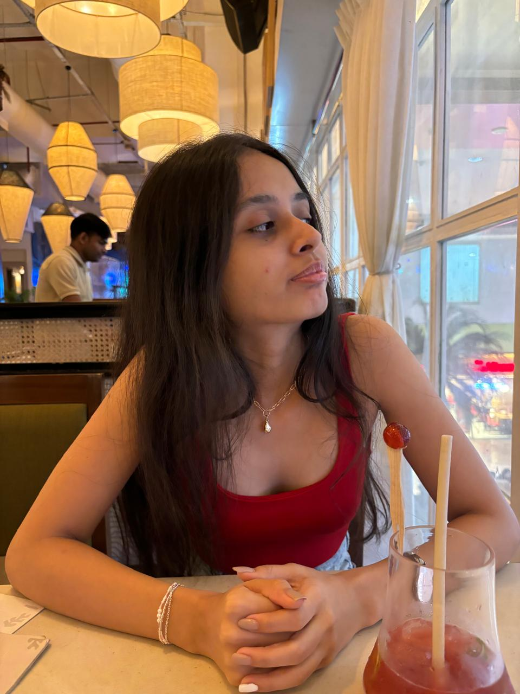
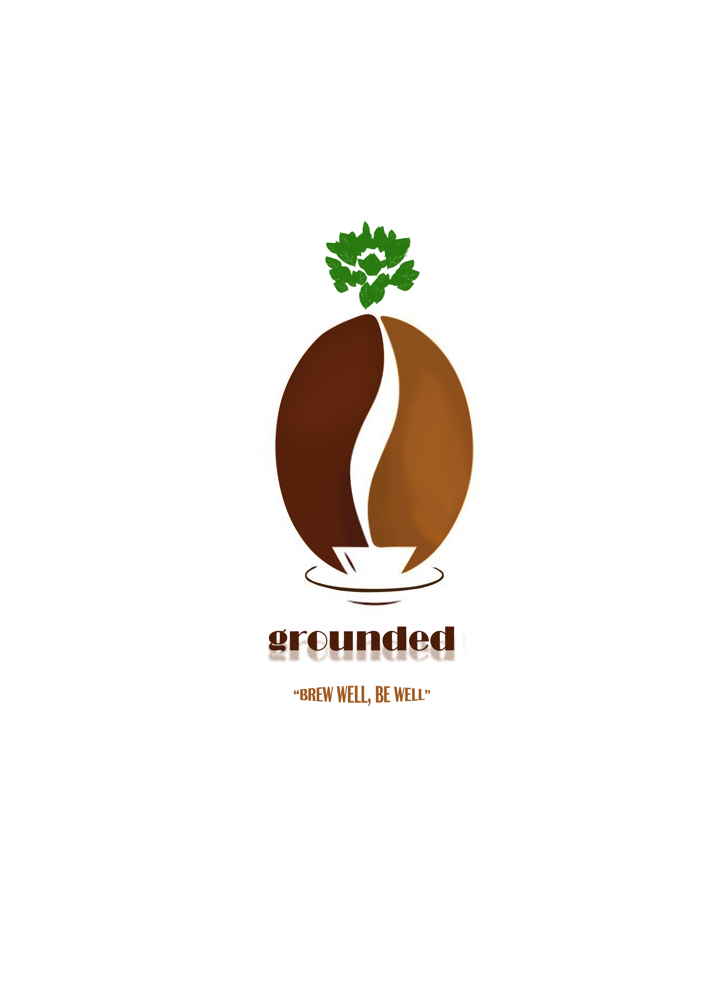
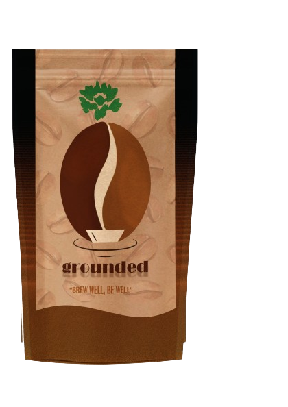
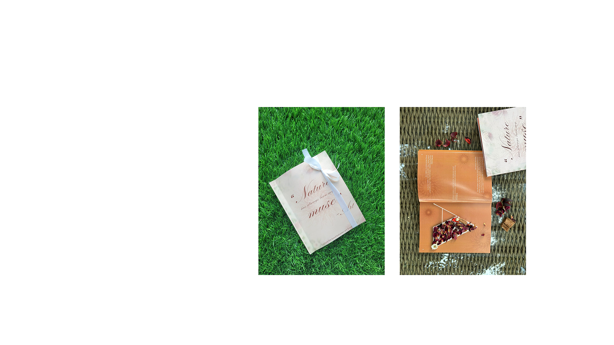

About me
Hello! I’m a second-year Communication Design student passionate about creating meaningful and visually compelling designs.
My work focuses on blending creativity and functionality to communicate ideas effectively. With a growing interest in branding, typography, and user-centric design, I thrive on exploring innovative solutions for modern-day challenges. Whether it’s crafting a custom font, designing a cookbook for health-conscious individuals, or diving into other creative projects, I approach every task with enthusiasm and a sharp attention to detail. Let’s connect and create something extraordinary!
I’d love to hear from you! Whether you have a project in mind, a collaboration opportunity, or just want to say hello, feel free to get in touch:
📧 Email: nishnakhimani@gmail.com
📱 Phone:+91 1234567890
📍 Location: Mumbai
Let’s create something amazing together!
My Projects
GROUNDED COFFEE BRANDING
The "Grounded Coffee" logo beautifully combines nature, wellness, and craftsmanship. The split coffee bean forms a steaming cup, symbolizing the journey from bean to brew, while the green leaf highlights freshness and sustainability. Warm browns evoke richness and comfort, complemented by the tagline "Brew Well, Be Well," reflecting the brand's focus on nourishing both body and soul. Simple yet meaningful, the design embodies quality, authenticity, and care.
 Nature has always been my muse- ART
Our theme for the glossary is nature through the lens of art. The glossary is a medium to experience the relationship between art and nature. When we look back in history the majority of the artists and their artworks are inspired by nature. Be it the vast landscapes, where the artists found muse for their next work or the use of natural materials in artworks; nature has always complemented art. With this idea in our mind we have planned on creating our glossary “Nature has always been my muse” ~ Art. The reader would gain an informative insight about the different art movements that were inspired by the landscapes, trees and skies; techniques where natural elements are used; how pigments / colors that we know today are made from nature; and artists who found nature as an art itself.
ACE IT
For the "Ace" luxury watch branding, the design emphasizes precision and sophistication with the theme "Time to Ace." A custom font inspired by the mechanics of timepieces, a minimalist black-and-white palette, and an integrated clock motif create a sleek, modern identity. The tagline "Every Second." reinforces the brand's ethos of valuing time and excellence. This project highlights creative typography and strategic design for a timeless appeal.